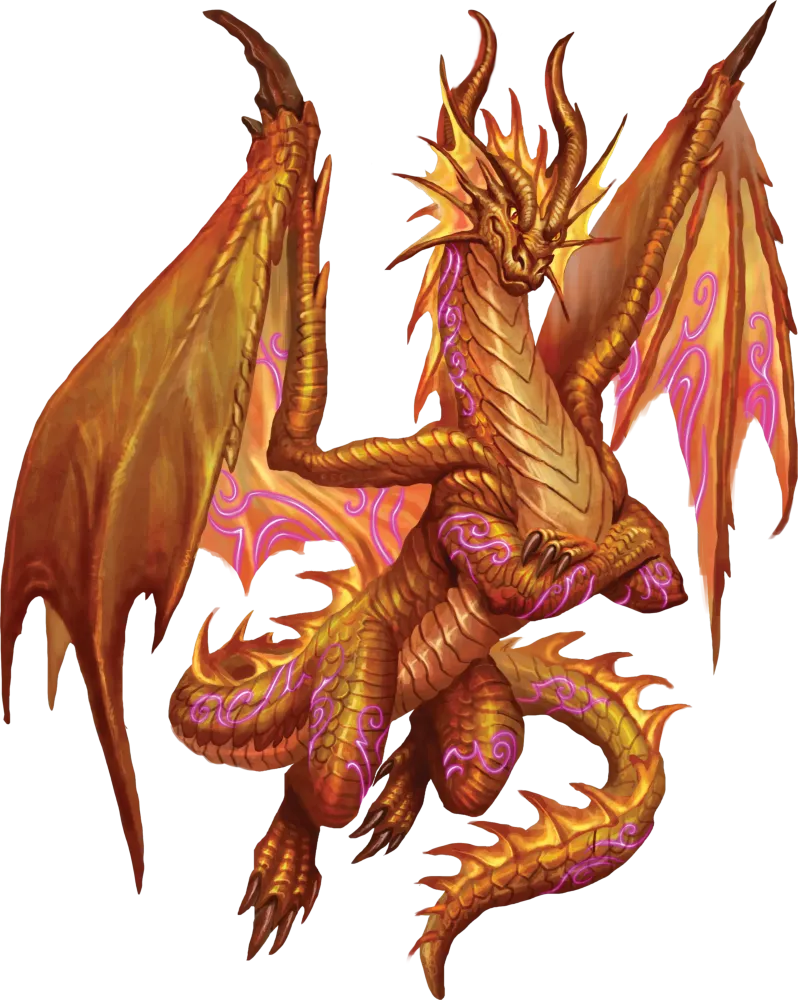

各年龄段数据卡
作为流言宗师与庞大八卦网络的绝对核心，太古琥珀龙是社交耳语网与舆论场中无可争议的无冕之王，时刻倾听着各大帝国的脉搏律动。当然，只要时机成熟，没有任何一条太古琥珀龙会介意在恰当的耳畔轻声吹上几句风，从而将整片流言生态悄然扭转至对自己有利的方向。 尽管真正知晓自己曾与太古琥珀龙打过交道的人寥寥无几，却有成百上千万人曾在浑然不觉间与它们――或是它们的代理人――有过交集。无论你是轻信了某条由太古琥珀龙八卦网络散播出去的传言，还是不经意间低声嘟囔了一句秘密、结果被它们的情报搜集网收入耳中，我们之中几乎没人能彻底避开太古琥珀龙编织的流言巨网；而少数真正做到这一惊人壮举的人，往往都是那些隐居在远离人烟的荒野深处、不与任何外人往来的苦行隐士。哪怕是偏僻闭塞的弹丸小村，也常会从走街串巷的货郎与行商口中听闻外界风声――而这些人传播的流言，追根溯源同样出自太古琥珀龙之口。 凶险流言挂在太古琥珀龙嘴边的流言八卦包罗万象：小到鸡毛蒜皮的琐碎谈资――比如某位贵族在最近一场舞会上穿的礼服究竟是引领潮流还是老土过时――大到足以颠覆整座帝国的惊天秘辛。曾有一些研究者百思不得其解，好奇它们为何连这等小事也不放过。其实答案并不唯一：诚然，唯有来者不拒地全盘吸纳一切消息，太古琥珀龙才能从中去粗取精、筛出最为关键的核心情报；但说句实在话，它们心底其实相当享受那些鸡毛蒜皮的琐碎八卦。正是这些小道消息，让它们始终保持着搜集更多情报的盎然兴致。 |
 太古琥珀龙 |